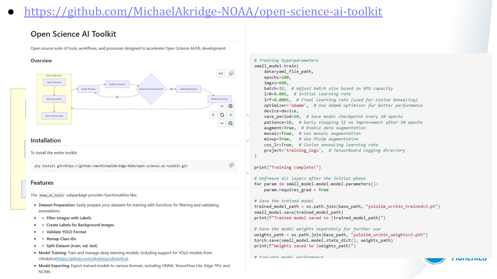

Module 1 | AI/ML Basics
Module 2 | AI/ML Data Preparation, Annotation, and Techniques
Module 3 | AI/ML Development Exercises & Examples
Module 4 | Deployment & Model Management
Q&A/Roundtable Discussions & Resources
Resources
